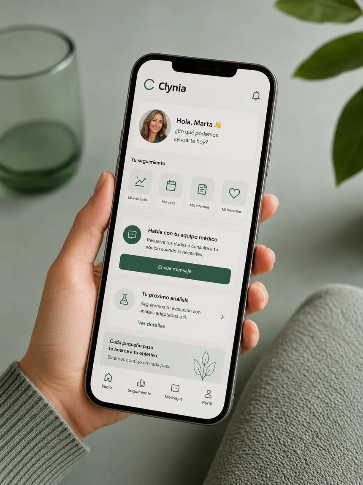

Plan 4 meses
295€
- Valoración con tu ginecólogo
- Tu fórmula en casa, si el ginecólogo lo considera adecuado
- Un análisis de control incluido
- Tu médico a mano por el portal
Para empezar a cuidarte, con todo incluido.
Avísame Ver planes
Ver planes
Te conectamos con ginecólogos colegiados que valoran tus síntomas y, si lo consideran adecuado para ti, te ofrecen acompañamiento ginecológico con seguimiento. Todo online, desde casa.
Test de síntomas gratuito. No pagas nada hasta elegir plan.
Cualquier indicación médica corresponde siempre a tu ginecólogo, si lo considera adecuado tras valorarte, con la documentación clínica oportuna y seguimiento.
Un servicio médico de verdad, cómodo y privado
Los sofocos, el insomnio, los cambios de ánimo o la niebla mental no son simplemente cosa de la edad. Son síntomas reales, y un médico puede ayudarte a entenderlos y abordarlos. No se trata de resistir, sino de cuidarte bien.
AvísameSi reconoces varios, puede que estés entrando en la perimenopausia o la menopausia. El test gratuito te ayuda a saber en qué punto estás.
Sin cita ni salas de espera. Empiezas con un test gratuito y un ginecólogo te llama cuando ha valorado tu caso, nunca un algoritmo.
Responde el test de síntomas gratuito en unos minutos, desde el móvil. Sabrás en qué punto estás. Si no es para ti, te lo decimos y te orientamos.
Si procede, eliges el plan que prefieras. No pagas nada hasta aquí.
Un ginecólogo colegiado toma tu caso y te llama. Si considera que no es adecuado para ti, te devolvemos el importe. Si lo considera adecuado, personaliza tu abordaje médico y hace seguimiento.
Un ginecólogo te llamará cuando haya valorado tu caso. Si no consigue localizarte, lo intentará de nuevo o te escribirá por email o por tu portal. Mantente atenta al teléfono.
Cuando empiezas con Clynia no compras un producto: cuentas con un ginecólogo que cuida cada paso.
Cuando un ginecólogo colegiado lo considera adecuado, el abordaje puede incluir hormonas bioidénticas: moléculas con la misma estructura que las que produce tu cuerpo, formuladas de forma personalizada. Sólo las indica el ginecólogo, tras valorarte, y se dispensan con la documentación clínica oportuna en farmacia autorizada.

Empieza con tu test gratuito. Si decides seguir, te suscribes al plan que prefieras: todo incluido, con el seguimiento ginecológico, los análisis de control y tu ginecólogo siempre a mano.
295€
Para empezar a cuidarte, con todo incluido.
Avísame540€
El equilibrio entre acompañamiento y precio.
Avísame790€
El cuidado más completo durante todo el año.
AvísameEl test es gratis y no pagas hasta suscribirte. El seguimiento y los análisis de control van incluidos en la suscripción. Si el ginecólogo lo considera adecuado, recibes la fórmula en casa. Si tras tu valoración considera que no es adecuado para ti, te devolvemos el importe.
Profesionales colegiados en España, independientes y especializados en menopausia y salud hormonal. Cada decisión la toma un médico, nunca un algoritmo.
Cada fórmula la personaliza un médico según tus síntomas, tu analítica y tu historia, y sólo cuando es adecuada para ti.
Sin promesas mágicas. Un proceso médico, ordenado y a tu ritmo.
Tu valoración con un ginecólogo colegiado y, si lo considera adecuado, el inicio del seguimiento, con la fórmula en casa.
Un control para valorar cómo respondes y ajustar la fórmula a tu medida.
Un análisis de control incluido para ajustar tu seguimiento y cuidar tu salud. La fórmula te llega a casa y tu ginecólogo está a mano por el portal.
El seguimiento, los análisis de control y el acceso a tu ginecólogo van incluidos en tu suscripción. Sólo tienes que acudir a tu análisis cuando toque; del resto nos ocupamos contigo. Cada cuerpo es distinto, y el acompañamiento del ginecólogo es lo que marca la diferencia.
El abordaje hormonal no es para todas, y eso es justo lo que lo hace serio. Tu ginecólogo valora siempre tu caso.
No. En Clynia no hay citas ni salas de espera. Haces el test y un ginecólogo te llama cuando ha valorado tu caso. Si no consigue localizarte, lo intentará de nuevo o te escribirá por email o por tu portal.
Empezar es gratis: el test de síntomas no tiene coste y no pagas nada hasta elegir un plan. Si tras tu valoración el ginecólogo considera que no es adecuado para ti, te devolvemos el importe.
Son hormonas con la misma estructura química que las que produce tu cuerpo, como estrógenos, progesterona o testosterona. Se formulan de manera personalizada según tu edad, tus síntomas y tu analítica. Su uso debe ser siempre individualizado y supervisado por un médico.
Un ginecólogo colegiado e independiente, y sólo si es clínicamente apropiado tras tu valoración. La fórmula se ajusta a tu caso. Clynia es una plataforma y nunca decide por el médico: la indicación es siempre del ginecólogo.
Tu valoración con un ginecólogo, el seguimiento ginecológico, la fórmula enviada a tu casa si el médico lo considera adecuado, los análisis de control cada cuatro meses y el acceso a tu ginecólogo por el portal para tus dudas. Tú sólo acudes a hacerte el análisis cuando toca.
El abordaje hormonal se indica sólo si tu ginecólogo lo considera adecuado, y se acompaña de controles y analíticas. No es apto en todos los casos, por ejemplo con antecedentes de cáncer de mama u ovario. Por eso la valoración médica y el seguimiento son imprescindibles.
Si tu ginecólogo lo considera adecuado, tu fórmula se prepara como fórmula magistral personalizada en una farmacia autorizada y la recibes en casa, incluida en tu suscripción. No tienes que ir a recogerla.
Sí, y va incluido en tu suscripción. Un control al mes para ver cómo respondes y un análisis cada cuatro meses para ajustar tu seguimiento y cuidar tu salud. Sólo tienes que acudir a hacerte el análisis cuando toque; lo demás lo llevas con tu ginecólogo por el portal.
Tus datos de salud se tratan conforme al RGPD, cifrados y visibles únicamente para el médico que te atiende. Nunca los compartimos con terceros con fines comerciales.
Empieza con el test de síntomas gratuito, sin compromiso y sin tarjeta. No pagas nada hasta decidir, y siempre hay un ginecólogo colegiado al otro lado.
Avísame